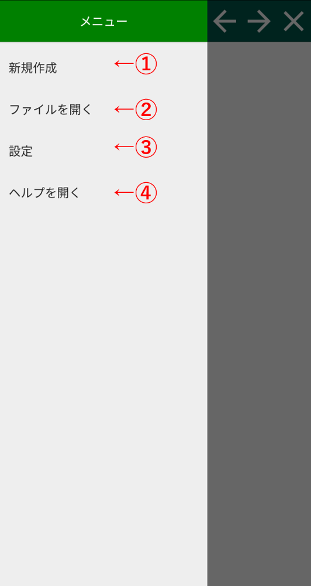
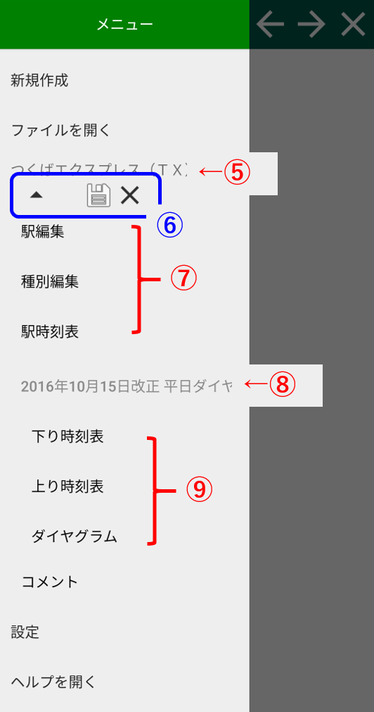

メニュー画面ヘルプ
ここではメニュー画面における操作について紹介します。スクショの番号の対応した説明があります。 
①：ファイルの新規作成
空のファイルが新規作成されます。 作成されたファイルは「平日」・「休日」のダイヤがすでに含まれています。 まずは「駅編集」にて駅の追加と削除を行ってください。②：既存のファイルを開く
スマホ内に保存されたファイルやOuDiaデータベースに登録されたファイルを開きます。 この項目を選択すると、「路線ファイルを開く」を開きます。③：設定
設定画面を開きます。⑤：ヘルプ
ヘルプ画面を開きます。
▲路線を開いた時の画面状態
⑥：路線タイトル
路線タイトルをタップすると路線ファイルのプロパティ ダイヤログを開きます。⑦路線操作アイコン
この路線の詳細を隠します。この路線の詳細を開きます。
メニュー中のこの路線の順番を一つ上に繰り上げます。
この路線を保存します。ファイルを保存する 画面
この路線を閉じます。変更は保存されないのでご注意ください。
⑧：路線各項目の編集
⑨：ダイヤ名
ダイヤ名をタップするとダイヤのプロパティ ダイアログを開きます。⑩：ダイヤの各項目
- 「下り時刻表」をタップすると、選択路線の下り時刻表が表示されます。列車の編集はここで行います。
- 「上り時刻表」をタップすると、選択路線の上り時刻表が表示されます。列車の編集はここで行います。
- 「ダイアグラム」をタップすると、選択路線のダイヤグラムが表示されます。